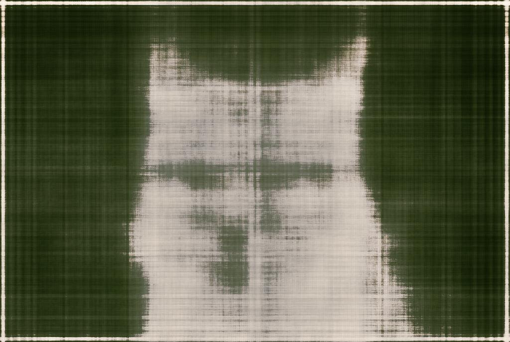
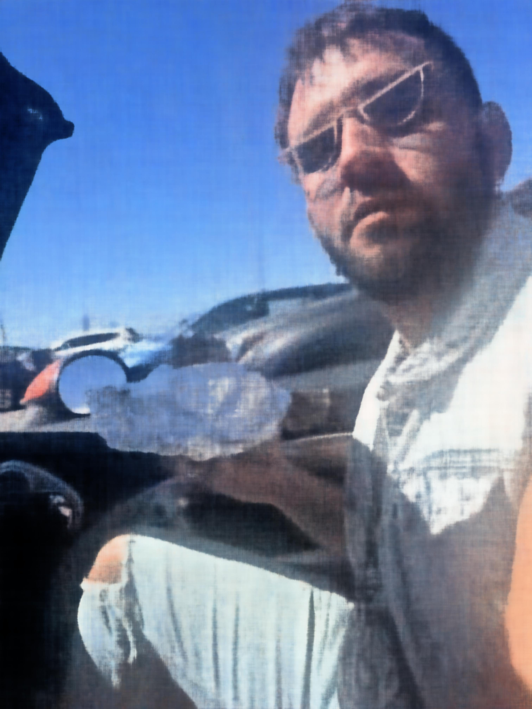
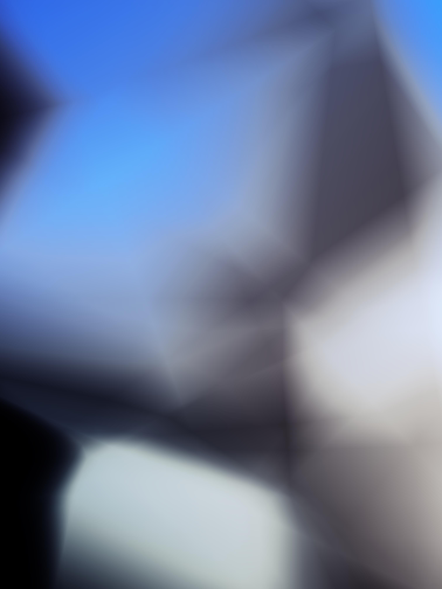
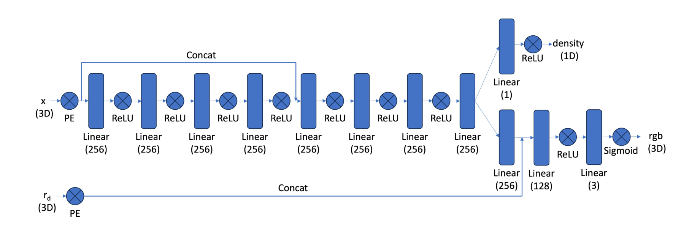
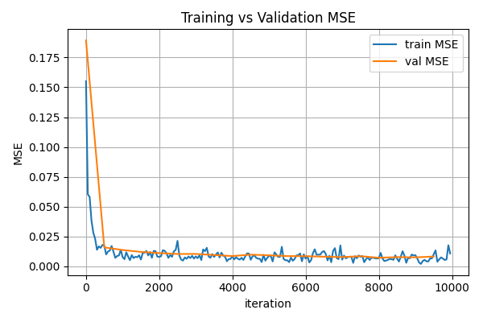
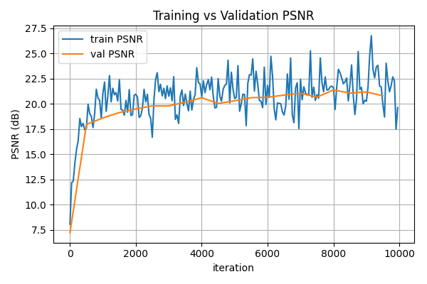
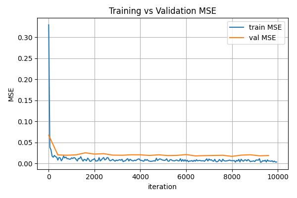
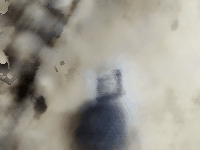
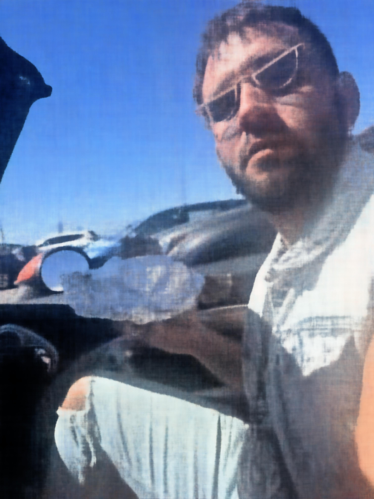
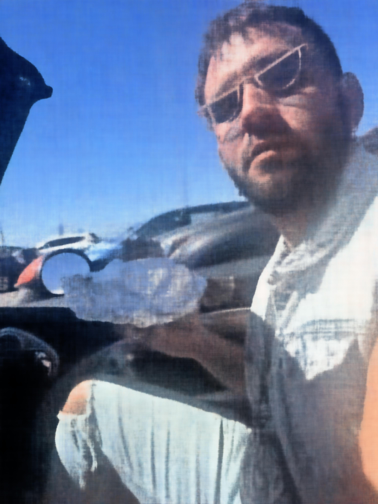

Project 4 Part 0 - Calibrating the camera and capturing a 3d scan
In the above images, we see two visualizations of the same 30+ photos of my favorite pencil holder. We see the camera frustrum poses and the resulting images.
Part 1 - Fitting a Neural Field to a 2d Image
Here we construct a Neural Field (F: {u, v} -> {r, g, b}) that can represent a 2d image in the nearal network space.
We first build a multilayer perceptron with an input of a 42 dimensional sinusoidal positional encoding of the (x,y) coordinates, 6 hidden layers of 256 neurons each
and each followed by a ReLU activation function, and the sigmoid function mapping predictions to a 3D RGB output. This network was trained using the Adam optimizer,
a learning rate of 1e-3, and 2000 iterations with a batch size of 10k in the training loop. The loss function used was MSE loss.
Below we see two images learned by the network. Each image is reconstructed below after 0, 100, 200, 1000, and 2000 iterations.


Below Peak Signal-to-Noise Ratio (PSNR) graphed over 2000 training iterations of the second image. It seems to plateau around 1750 iterations
but reaches a reasonable result much sooner, even around 250 iterations.
Below we see the effects of altering the width of the model and the positional encoding frequency. From left to right top to bottom, the four images show
width=20 & L=0, width=20 & L=4, width = 100 & L = 0, width = 100 & L = 4. Each image is shown on the 2000th iteration.
It seems that adding dimensions to the input in the positional encoding produces reasonably clear results before adding width to the model. In both instances
where L=0, we see the blurriest images.

Part 2 - Fitting a Neural Radiance Field from Multi-view Images
In this section I fit a neural radiance field from a predefined lego dataset. To implement this from images taken from a calibrated camera, pixels need to be
converted first to camera coordinates, world coordinates, and finally into rays.
The pixel to camera conversion takes place by using the inverse of the instrinsics matrix to transform the homogenous pixel coordinate to 3D space. We then multiply
this result by the inverse of the extrinsic matrix to get this coordinate in world coordinates (defined by the Aruco tags in the images I captured). For this same pixel,
we can define a ray with the camera center (given as the translation component in the camera-to-world matrix) the pixel in world at a depth of one from the camera center.
The MLP is constructed with the architecture below,

Then, to train the nueral radiance field, we sample rays accross all images and sample points along these rays, randomly dispersed between some distance interval. For
the lego scence, this interval is between 2 and 6 meters. Below is a visualization of this sampling method accross many images and from only one camera.
As we train the NeRF, the network learns the color densities at points in space. Below is a rendered perspective from the validation set at 0 iterations of training, 500
iterations, 4,000 iterations, adn 9500 iterations.
Below we see the MSE and PSNR curves generated during training.


And finally, using the spherical perspectives from the test set, we can generate a 3D view of the lego truck.
Now, we can repeat the process on data collected from an iPhone camera, using Aruco tags to calibrate the camera. I tried to capture photos within 1 meter of the teapot,
so I chagned my near/far parameters to be 0.2-1.0. I also sampled 64 points per ray as opposed to 32.
Below is a rendered perspective from the validation set at
0 iterations of training, 500 iterations, 4,000 iterations, adn 8,000 iterations, along with the MSE and PSNR curves.

And the final rendered 3D gif:



 
